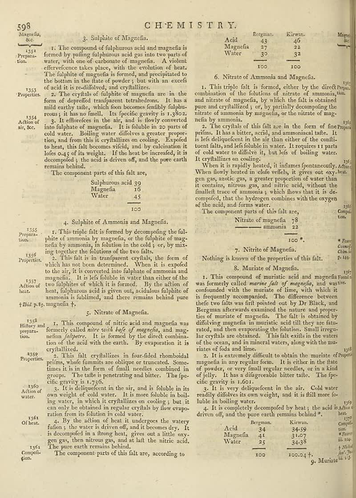

page-2493-84519542efce.jpg

Page ID: britannica:309f765b1ecc83e0a7f7762e44b4a927a7555443:train:2493
Running head: 598
Image SHA-256: 84519542efceeb7511318fcd5cf2213ed3dc634dd20638613d3ba33a500c2393

(untitled) [?]
Magnella,
Sc.
Prepris-tion.
Achon of
3. It effectes in the air, and is flowed converted into fulphate of magenae. It is soluble in 20 parts of cold water. Boiling water didtics a greater proportion, and from this fit crystallizes on cooling. Exposed to heat, this felt becomes vicidé, and by calcination it lofea 0.4; of its weight. If the heat be increased, it is decomposed, the acid is driven off, and the pure earth remains behind.
The component parts of this fall are,
Sulphurous acid 39
Magnella 16
Water 45
Achon:
Action of
water.
1. The compound of fulphurous acid and magnella is formed by pataling fulphurous acid gas into two parts of water, with one of carbonate of magnella. A violent effervescent takes place, with the evolution of heat. The fulphite of magnella is formed, and precipitated to the bottom in the fate of powder / but with an excess of acid it is reaffilatively, and crytallizes.
2. The crythals of fulphirous magnella are in the form of depredited transparent tetrahedrons. It has a mild earthy tafe, which then becomes family fulphra round; it has no final. Its (pecic gravity is 1) 3/5oz.
3. It effectes in the air, and is flowed converted into fulphate of magenae. It is foluble in 20 parts of cold water. Boiling water didtics a greater proportion, and from this fit crystallizes on cooling. Exposed to heat, this felt becomes vicidé, and by calcination it lofea 0.4; of its weight. If the heat be increased, it is decomposed, the acid is driven off, and the pure earth remains behind.
The component parts of this fall are,
1. This triple falls is formed by decomposing the fulphite of ammonia by magnella or the fulphite of magenae by ammonium. In foliation in the cold / or, by mixing together the folutions of the two falls.
2. This falls is in nonfrentacyrdia, the form of which has had been determined. When it is propelled to the air, it is converted into fulphate of ammonia and magenails. It is leef fulphin in water than either of the two fulphite of which it is formed. By the action of heat, fulphurous acid is given on, aculusful fulphite of ammonia is fublimed, and there remains behind pure
1. This compound of nitric acid and magnella was formerly called _nitre with belfs of magnella_, and magenina _lolpetere_. It is formed by the direct combination of the acid with the earth. By evaporation it is crytallized.
2. This fatty crytlinalizes in four-filled rhomboidal pyrite, whole fuminis are oblique or truncated. Some times it is in the form of small needles combined in groups. The tafte is penetrating and bitter. The pecitic gravity is 1.75.
3. It is deliquent in the air, and is fsoluble in its own weight of cold water. It is more foluble in boiling water, in which it crytallizes on cooling ; but, it can only be obtained in regular crystals by flow evaporation from its foliation in cold water.
4. By the action of heat it undergoes the waters fufen, the water is driven off, and it becomes dry. It is decompiled in a throat, gives out a little oxygen gas, then nitrous gas, and at all the nitric acid. The pure earth remains behind.
The component parts of this fall are, according to
\begin{tabular}{cccc}
\thead{\mbox{}} & \thead{Bergman.} & \thead{Kirwan.} & \thead{Magne}\\
Acid & 43 & 46 & \mbox{}\\
Magnella & 27 & 22 & \mbox{}\\
Water & 30 & 32 & \mbox{}\\
100 & 100 & 100 & \\
\end{tabular}
1. This triple falls is formed, either by the dirediorgan combination of the folutions of nitrate of ammonia, and nitrate of magnella, by which the falls is obtained pure and crytallized , or, by partially decomposing the nitrate of ammonia by matguela, or the nitrate of magenia by ammonia.
2. The crythals of this fall are and the form of free frozen grains, it has a bitter, acids, and ammonated tafte. It is lefs deliquent in the air than either of the confluent fats, and lefs foluble in water. It requires 11 parts of cold water as differs it, but lefs of boiling water. It crytallizes on cooling.
When it is rapidly heated, it inflamed spontaneously. After when lonly heated in cloke vells, it gives out very heat, gen, gas, and gas, a greater proportion of water than it contains, nitrous gas, and nitric acid, without the familiar trace of ammonia, which flows that it is de-completed, that the hydrogen combines with the oxygen of the acid, and forms water.
The component parts of this fall are,
Nitrate of magnella
ammonia 22
100 *
Nothing is known of the properties of this fall.
1. This compound of miruric acid and magnella found was formerly called _mirice, left of magnella_, and was not confounded with the muriate of lime, with which it is frequently recommended. The difference between thefe two falls was flat printed and by Dr Blacks, and Bergman afterwards examined the nature and proper ties of muriate of magnella. The falls is obtained by differing magnella in muricate acid till they are fatuated, and then evaporating the solution. Small irregular crystals are obtained. This falls exists in the waters of the ocean, and in mineral waters, along with the marinate of folds and lime.
2. It is extremely difficult to obtain the muriate of proper magnetic in any regular form. It is either in the late or powder, or very small regular needles or in a kind of jelly. It has a diligenceable bitter tafte. The specific gravity is 1.601.
3. It is very deliquent in the air. Cold water readily dilduces its own weight, and it is fill more lo-ble in boiling water.
4. It is completely decoupled by heat ; the acid is often driven off, and the pure earth remains behind **.*
Let it completely downed by heat ; the acid is often driven off, and the pure earth remains behind **.*
\begin{tabular}{cc}
Acid & 34-19\\
Magnella & 41\\
Water & 25\\
\end{tabular}
Matched article: Tione degli Abruzzi (Wikipedia, revision 1078779781, re-rank score -4.125) · comparison
OCR issues
No OCR issues recorded for this page.